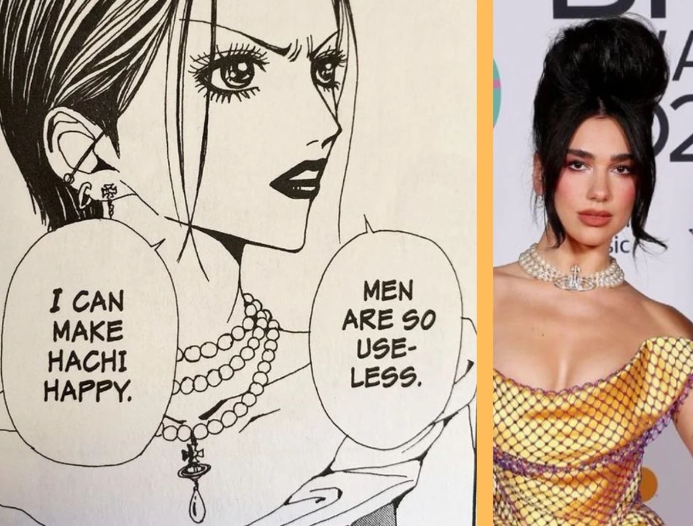

Yazawa deixa sua paixão por moda explicita em todos os mangás que escreveu, incluindo o popular "Paradise Kiss". Em Nana que Yazawa se permite explorar suas referências preferidas de moda e cultura pop e homenagear sua estilista favorita, Vivienne Westewood. Nana Osaki, a rebelde, sempre aparece em sua obra usando algum acessório ou detalhe com a logo westwood: uma estilização do orbe soberano, uma jóia real britânica, que na versão de vivienne é rodeada por um anel de saturno
